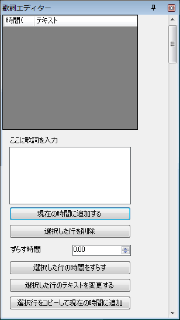
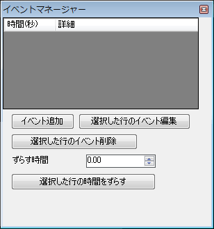

Aquí se explica cómo configurar las letras.
Muestre el editor de letras desde Vista → Editor de letras.

Primero, para añadir un texto vacío en el tiempo 0, lleve el vídeo a 0 y pulse el botón de añadir en el tiempo actual sin escribir nada en el cuadro de texto.
Luego, lleve el vídeo al momento en que quiera cambiar la letra, escríbala en el cuadro de texto y pulse el botón de añadir en el tiempo actual.
Así se mostrará la letra. Para los momentos en que no quiera mostrar letra, deje el cuadro vacío y pulse el botón de añadir.
Las líneas se añaden en el tiempo actual del vídeo. Puede cambiar el tiempo yendo al momento deseado antes de pulsar añadir, desplazando el tiempo de la línea seleccionada o arrastrando y soltando la marca [L] de la línea de tiempo.
Ahora, los eventos. (Quizá sea algo avanzado)
Muestre el gestor de eventos desde Vista → Gestor de eventos.

Seleccione Añadir evento para mostrar el diálogo de añadir evento.
En el gestor de eventos puede configurar el volumen de cada golpe, el volumen del vídeo, si suena un sonido al soltar una marca larga, cambios de BPM (soflan), paradas, sudden, hidden, etc.
Elija los efectos que vayan con el vídeo.
Los eventos se añaden en el tiempo actual del vídeo. Puede cambiar el tiempo yendo al momento deseado antes de pulsar Añadir evento, desplazando el tiempo de la línea seleccionada o arrastrando y soltando la marca [E] de la línea de tiempo.
Siguiente